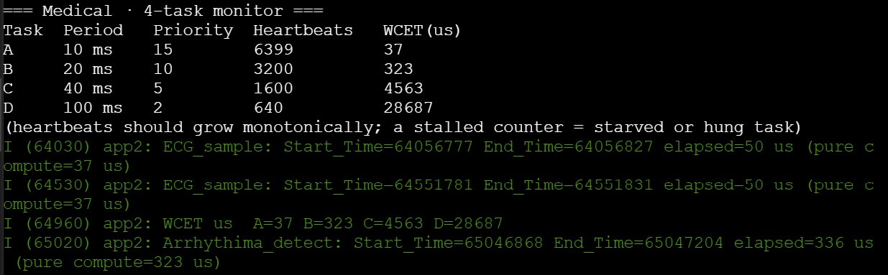
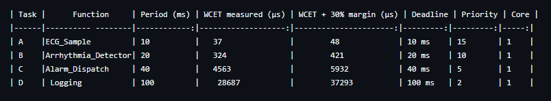
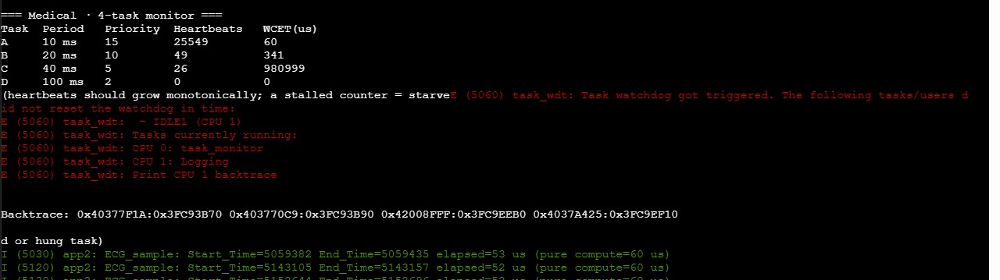

RTOS / Embedded Systems Capstone · Theme: Medical
A dual-core ESP32 heart monitor that never misses a beat — even under load.
Four rate-monotonic FreeRTOS tasks share one core to sample, analyze, and alarm on cardiac data in real time, while the second core stays free to report on it.
4 tasks active
Overview
What this project is
PULSE/OS simulates the real-time software backbone of a bedside cardiac monitor. It runs four independent FreeRTOS tasks — ECG sampling, arrhythmia detection, alarm dispatch, and housekeeping/logging — all pinned to one core of a dual-core ESP32, scheduled by fixed priority under a rate-monotonic policy.
The second core is reserved entirely for reporting: a lightweight monitor (web dashboard or serial console, selectable at compile time) so instrumentation never perturbs the timing of the tasks it's measuring. Every task is wrapped in a worst-case execution time (WCET) probe, so scheduling decisions can be defended with real numbers, not guesses.
- Target boardESP32 (dual-core, Wokwi sim)
- RTOSFreeRTOS (ESP-IDF)
- Scheduling policyFixed-priority, rate-monotonic
- Core isolationTasks: Core 1 · Monitor: Core 0
- Task count4
- InstrumentationPer-task WCET + heartbeat counters
Demo
See it running
Wokwi simulation and/or walkthrough video goes here — showing the four tasks running, the live monitor updating, and a preemption event captured on the serial trace.
Drop in a YouTube embed or Wokwi project iframe here.
<iframe src="https://www.youtube.com/embed/YOUR_VIDEO_ID"></iframe>
Serial trace

Live serial output: heartbeat counters climbing monotonically per task, plus periodic WCET-max logging for A/B/C/D — confirms none of the four tasks is starved.
Task Table
Scheduling summary
Rate-monotonic assignment: higher sampling rate → higher priority. WCET measured on-device via MEASURE_WCET, with a 30% safety margin applied against each task's deadline.
| Task | Function | Period | Priority | Core | WCET measured (µs) | WCET + 30% margin (µs) | Deadline |
|---|---|---|---|---|---|---|---|
| A | ECG_Sample | 10 ms | 15 (highest) | 1 | 37 | 48 | 10 ms |
| B | Arrhythmia_Detector | 20 ms | 10 | 1 | 324 | 421 | 20 ms |
| C | Alarm_Dispatch | 40 ms | 5 | 1 | 4563 | 5932 | 40 ms |
| D | Logging | 100 ms | 2 (lowest) | 1 | 28687 | 37293 | 100 ms |
Source data

Hazard Analysis
Induced Failure
Every scheduling choice has a failure mode. To prove the priority assignment actually matters, the highest-priority task's blocking delay was deliberately removed so it never yields — starving every task at or below it.
What was broken, and what happened
Placeholder — replace this paragraph with your own explanation of the induced-failure test: what was changed, what you predicted, and what the heartbeat counters showed once it ran.
Evidence

Final Reflection
What this taught me
Placeholder for your closing reflection: what surprised you about rate-monotonic scheduling in practice, what you'd change about the priority assignment with more time, and how measuring real WCET numbers changed (or confirmed) your design decisions.
README
Project README
Expand full README
# Final_Integration_Capstone
# App 2 scaffold — multi-task scheduling
### Task table with measured WCET
Mean:
(over 100 iterations)
A: 36.63
B: 322.95
C: 4560.86
D: 28292.77
| Task | Function | Period (ms) | WCET measured (µs) | WCET + 30% margin (µs) | Deadline | Priority | Core |
| A |ECG_Sample | 10 | 37 | 48 | 10 ms | 15 | 1 |
| B |Arrhythmia_Detector| 20 | 324 | 421 | 20 ms | 10 | 1 |
| C |Alarm_Dispatch | 40 | 4563 | 5932 | 40 ms | 5 | 1 |
| D | Logging | 100 | 28687 | 37293 | 100 ms | 2 | 1 |
### Schedulability defense
- Total utilization U = ∑ Cᵢ/Tᵢ
A: 37/10000 = 0.0037
B: 324/20000 = 0.0162
C: 4563/40000 = 0.1141
D: 28687/100000 = 0.2869
A+B+C+D = 0.421 <= 1
- Liu-Layland bound for n=4: U ≤ 4(2^(1/4) − 1) = 0.7568
0.421 < 0.75
Therefore feasible
- If U > Liu-Layland: run response-time analysis on task D (lowest priority)
U < Liu-Layland
Therefore not needed
- Conclusion: feasible / infeasible / borderline. State which.
In conclusion, the tasks were feasill. This was concluded due to the total utilization being
less than the caluclated Liu-Layland value deried from the amount of tasks (n=4).
### Preemption evidence
For preemptive evidence, I actually took a different route, since I already had a limiter for the
amount of prints I had per tick, I had the values edited to demonstrate A and D more closley. Doing this, I had
more accurate start and stop times, demonstrating preemption. In the immage I have within the files and such,
task D has a range/ time of 9967245-9995779 while task A had a time/range of 9991782-9991832. These values show
task A starting after task D started but ending before task D did, having its range completely within task D's
time/range.
### Engineering analysis
1. **Priority defense** — explain each priority. RMS says shortest period → highest priority. Did you follow it?
For my 4 tasks, I set their priorities as A: 15, B: 10, C: 5, and D: 2 as directed by the instructions to
keep the logic of lowest period=highest prioritiy. This follows RMS, by keeping this rule and staying monotinic.Task A Is
the highest prioritiy because it has the shortet period of just 10-50us. Task B is the 10 to stay behind Task
A, but to keep its priority over task C and D, allowing for A to keep its consistency without taking away
B's data/starving. With a period of 40ms, it allows for B and A to remain as top priorities. And finally,
task D had the lowest priority due to it having the largest period.
2. **3× WCET stress** — if your highest-priority task's WCET tripled, what's the new U? Is the set still feasible?
37us * 3 = 111us
111us/10000 = 0.0111
B: 324/20000 = 0.0162
C: 4563/40000 = 0.1141
D: 28687/100000 = 0.2869
A+B+C+D = 0.425
0.425 is still less than 0.7568, therefore YES, the set is still feasible.
3. **Preemption proof** — quote the two timestamps showing preemption.
"I (9970) app2: ECG_sample: Start_Time=9991782 End_Time=9991832 elapsed 50us
I (9970) app2: Logging: Start_Time=9967245 End_Time=9995779 elapsed=28534"
Source:
https://claude.ai/chat/d6245ad9-d9af-4659-8863-2087f54356cf
https://chatgpt.com/g/g-6a29682f0aec819182c6c3cef119f302-plus/c/6a2d80dc-30c0-83ea-94d9-4b4fd18b0f07
(Used old chatgpt chat to go over the calculations for utilization)
I mainly used just a single chat to build off of each question I had along with clarification.
IMAGES IN FOLDER (CONCURENCY DIAGRAM AND OUTPUT proof)
See README.md in this repository for build instructions, priority-assignment rationale, and the full WCET trace.